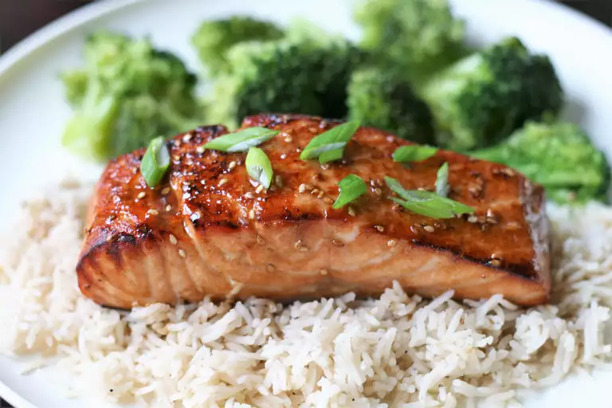

Teriyaki Salmon

Description
Here is a recipe for a yummy and sweet teriyaki salmon. It should be quick, tasty and have a good blend of flavor to it!
Ingredients
- 1/4 cup sesame oil
- 1/4 cup lemon juice
- 1/4 cup soy sauce
- 2 tablespoons brown sugar.
- 1 tablespoon sesame seeds
- 1 teaspoon ground mustard
- 1 teaspoon ground ginger
- 1/4 teaspoon garlic powder
- 4 (6ounce) salmon steaks
Steps
- Mix sesame oil, lemon juice, soy sauce, brown sugar, sesame seeds, ground mustard, ginger, and garlic powder in a small saucepan over low heat. Bring to a simmer, stirring until sugar has dissolved. Set aside 1/2 cup of marinade for basting.
- Pour the rest of the marinade into a resealable plastic bag. Add salmon steaks, coat with marinade, squeeze out excess air, and seal the bag. Marinate in the refrigerator for about 2 hours.
- Set an oven rack about half a foot (6 inches) from the heat source and preheat the oven's broiler.
- Broil salmon steaks under the preheated broiler for 5 minutes, brushing salmon with reserved marinade. Turn and continue to broil until salmon is opaque and flakes easily, about 5 more minutes. Continue to brush.